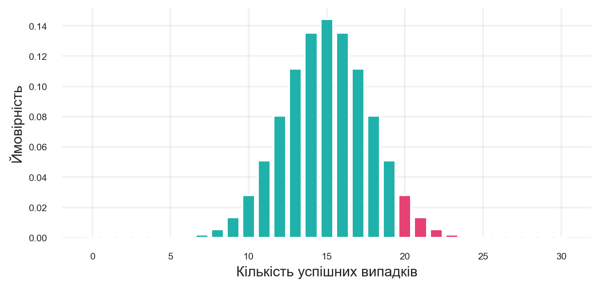

Ви вирішили створити платформу онлайн-курсів з програмування. Ви записали навчальні відео та запропонували користувачам доступ за передплатою. Вартість курсу для студента становить 1000 гривень, а витрати на підтримку платформи та індивідуальні консультації коштують вам 500 гривень з кожного студента.
Проте ви помічаєте, що деякі люди відмовляються від курсу після першого заняття, якщо матеріал їм здається складним або нецікавим. Інвестори готові підтримати ваш проєкт, якщо рівень відмов буде нижче 50%.
Щоб це перевірити, ви проводите експеримент: залучаєте 30 нових студентів. 20 із них проходять курс й оплачують доступ, а 11 відмовляються. 20 — це більше половини, але чи достатньо цього, щоб довести перспективність проєкту?
Розв’язуючи таку задачу, ми припускаємо, що існує певна аудиторія, яка користуватиметься нашим сервісом. Цю групу називають генеральною сукупністю. Якщо запустити сервіс для всіх потенційних користувачів, у ньому буде певна частка успішних випадків, позначимо її як \(\mu\). Це невідомий параметр, який ми не можемо визначити безпосередньо. Натомість ми можемо проводити експерименти та досліджувати результати. Оскільки протестувати продукт на всій аудиторії неможливо, ми беремо вибірку з генеральної сукупності та аналізуємо частку успішних випадків.
Згідно з результатами нашого експерименту, спостережувана ймовірність оплати становить \(\hat{\mu} = 20/30 = 0.67\)1. Це означає, що 67% студентів оплатили доступ. Чи можемо ми зробити висновок, що справжня частка успішних випадків перевищує 50%?
Розгляньмо, чому отримане значення може не бути переконливим доказом. Припустимо, що ймовірність успішної оплати дорівнює \(\mu = 0.5\), і змоделюємо можливі результати для 30 студентів.
Давайте спростимо цю задачу до прикладу з підкиданням монетки та змоделюємо результати для 30 спроб:
Якщо монетка випаде орлом, студент оплачує доступ.
Якщо монетка випаде решкою, студент відмовляється від курсу.
Використаємо метод integers() до класу Generator, яка генерує випадкові цілі числа в заданому діапазоні.
Підкинемо монетку 30 разів та порахуємо кількість успішних випадків.
Ми бачимо, що в експерименті частка успішних випадків навіть перевищила 63%, тоді як у симуляції була закладена ймовірність 50%.
Тому, на жаль, ми не можемо з абсолютною точністю визначити, яким є справжнє значення \(\mu\) у генеральній сукупності та чи перевищує воно 50%, незалежно від того, скільки спостережень ми проводимо. Однак, застосовуючи методи прикладної статистики, ми зможемо використати інструменти, які допоможуть ухвалити правильне рішення, зокрема й у цьому випадку.
1.2 Статистичні гіпотези
1.2.1 Постановка задачі
Ми з’ясували, що навіть за ймовірності \(\mu = 0.5\) можна отримати значну кількість успішних випадків. Насправді ми спеціально підбирали seed для отримання такого результату. Якщо повторити цей експеримент з іншим значенням seed або збільшити кількість спостережень, результат може виявитися іншим.
Порада
Спробуйте змінити seed (наприклад 22) або кількість спостережень та перевірте, як змінюється результат.
Тож велика кількість успішних випадків може бути результатом випадковості. Щоб вирішити, чи можна вважати результати експерименту статистично значущими необхідно отримати відповідь на питання:
Чи можна вважати, що спостережуване значення \(\hat{\mu}\) є більшим від \(\mu = 0.5\)?
Звернімося до теорії ймовірностей. Факт підписки на наш сервіс для кожного окремого студента можна розглядати як випадкову величину \(\xi\), яка підпорядковується розподілу Бернуллі3. Параметр цього розподілу, а саме ймовірність успіху, нам невідомий.
\[
\xi \sim \text{Bernoulli}(\mu)
\]
де \(\mu\) — ймовірність успіху.
Нас цікавить підтвердження того, що \(\mu > 0.5\). У статистиці для перевірки гіпотез розглядають дві можливості:
Нульова гіпотеза (\(H_0\)) формулюється як твердження, яке ми прагнемо спростувати.
Альтернативна гіпотеза (\(H_1\)) висловлює припущення, яке ми хочемо довести.
де \(\xi_i\) — випадкова величина, яка показує успіх у \(i\)-му спостереженні, \(S_n\) — кількість успішних випадків у \(n\) спостереженнях, \(n\) — кількість спостережень, \(\mu\) — ймовірність успіху.
Давайте подивимось, як це виглядає графічно. Для цього побудуємо графік функції щільності ймовірностей для біноміального розподілу з параметрами \(n = 30\) та \(\mu = 0.5\).
n =30mu =0.5x = np.arange(0, n +1)y = binom.pmf(x, n, mu)plt.bar(x, y, color=turquoise)plt.bar(x[x >=20], y[x >=20], color=red_pink)plt.xlabel("Кількість успішних випадків")plt.ylabel("Ймовірність")plt.show()

Рисунок 1.1: Функція щільності ймовірностей при \(H_0\)
Рисунок 1.1 демонструє функцію щільності ймовірностей для біноміального розподілу з параметрами \(n = 30\) та \(\mu = 0.5\). Ціановим5 кольором позначено ймовірності для кожної кількості успішних випадків. Рожевими виділено ймовірності для кількості успішних випадків, яка перевищує або дорівнює 20.
1.2.2 Критерій
Щойно ми розробили алгоритм, який на основі вибірки \(\xi\) або визнає наявність доказів на користь \(H_1\), або повідомляє, що таких доказів немає. Відповідно, він або відхиляє \(H_0\), або не відхиляє її.
Такий алгоритм називається критерієм. Його можна подати у вигляді функції \(S\), яка приймає реалізацію вибірки та повертає \(1\), якщо слід відхилити \(H_0\), та \(0\) в іншому випадку.
\[
S(\xi) = \begin{cases}
1, \text{ якщо відхиляємо } H_0 \\
0, \text{ в іншому випадку}
\end{cases}
\]
Давайте припустимо, що ми вирішили відхилити \(H_0\), якщо кількість успішних випадків перевищує або дорівнює 21. Тоді критерій набуде вигляду:
\[
S(\xi) = \begin{cases}
1, \text{ якщо } \sum \xi_i \geqslant 21 \\
0, \text{ в іншому випадку}
\end{cases}
\]
Зазвичай скорочують запис і пишуть просто правило, за яким відхиляємо \(H_0\)
\[
S = \{\sum \xi_i \geqslant 21\}
\]
Позначимо \(Q = \sum \xi_i\), \(C = 21\), тоді критерій набуває вигляду:
\[
S = \{Q(\xi) \geqslant C\}
\]
Так влаштована більшість класичних критеріїв у прикладній статистиці, тому величинам у ньому дано спеціальні назви. \(Q\) називається статистикою критерію, \(C\) — критичним значенням.
\(Q\) може бути будь-якою функцією від вибірки, яку ви вважаєте логічною для перевірки гіпотези. У нашому випадку це кількість успіхів, або сума всіх \(\xi_i\). Але ви можете вибрати й інші: максимальне значення, суму перших 5 значень або навіть просто перший елемент.
1.2.3 Критична область
Знову перепишемо наше основне запитання, тільки тепер з використанням нашого критерію \(S\):
Наскільки часто може бути таке, що за справедливості \(H_0\) критерій \(S\) відхиляє гіпотезу?
Відповідь на це запитання залежить від критичного значення. Зараз ми взяли його рівним 21, побачивши на картинці, що великі відхилення відбуваються при \(H_0\) рідко. Але що означає рідко й наскільки рідко, не сказали. Тепер наша мета зрозуміти, як вибрати критичне значення \(C\), виходячи з частоти помилок нашого критерію.
Вибираючи \(C\), ми можемо або часто відхиляти нульову гіпотезу, коли \(C\) мале, або можемо робити це рідше, коли \(C\) велике. Щоб вибрати правильне значення, потрібно визначитися, коли наш критерій помиляється.
\(C = 16\). Якщо відхиляти гіпотезу при отриманні хоча б 16 успішних підписок із 30, то це навряд чи влаштує інвесторів. Так, успіхів більше половини. Але якщо в генеральній сукупності ймовірність 0.5, то майже в половині випадків ми будемо відхиляти гіпотезу. Критерій помилково повертає \(1\), тобто це помилка хибно позитивна (false positive, FP).
\(C = 29\). У такому разі будемо відхиляти гіпотезу тільки за 29 або 30 успіхів. Ці значення, звісно, говорять про те, що відхилення від 50% успіхів сильне. Але якщо в генеральній сукупності ймовірність, наприклад, 60%, то такі значення будуть виходити рідко. Але ж такі ймовірності теж влаштували б інвесторів, й ми б змогли відкрити стартап! А з таким критерієм ми навряд чи доб’ємося цього. Не відхилити гіпотезу \(H_0\), коли вона неправильна — це теж помилка. Вона називається хибно негативна (false negative, FN), оскільки критерій повернув 0 помилково.
У нашому завданні інвесторам важливіше хибно позитивна помилка. Їм дуже не хочеться потрапити в ситуацію, коли їм показали доказ успішності бізнесу, а виявилося, більшість користувачів відмовляється оформлювати підписку й компанія не отримує прибуток. Це призведе до збитків. Хибно негативна помилка призведе до того, що ви втратите успішний бізнес, але інвестори грошей не втратять.
Тому виберемо поріг, щоб ймовірність хибно позитивної помилки була задовільною, або ж частота хибнопозитивних спрацьовувань (False Positive Rate, FPR). Для цього треба зрозуміти, як часто ми будемо відхиляти гіпотезу, за умови вірності \(H_0\).
Тепер знову переформулюємо основне питання, повністю з використанням нових термінів, й врешті-решт відповімо на нього.
Який FPR у критерію \(S\) для перевірки гіпотези \(H_0\) проти \(H_1\)?
Коли \(H_0\) є вірною, щоб порахувати кількість успіхів ми проводили 30 разів підкидання монетки з ймовірністю орла \(0.5\). Кількість орлів (тобто успіхів) у такому експерименті має розподіл, який називається біноміальним, тобто при \(\mu = 0.5\) наша статистика має біноміальний розподіл \(Q \sim Binom(0.5, 30)\).
Це вже ймовірність події за конкретного розподілу випадкової величини. Його можна подивитися за таблицею або, що зручніше, обчислити з використанням мов програмування.
1.2.4 Обчислення FPR
Давайте порахуємо суму ймовірностей для кількостей успіхів від 21 до 30 включно. Покажемо графічно, як це виглядає на Рисунку 1.2.
x = np.arange(0, n +1)y = binom.pmf(x, n, 0.5)plt.bar(x, y, color=turquoise)plt.bar(x[x >= crit_subs], y[x >= crit_subs], color=red_pink)for i inrange(crit_subs -2, crit_subs +4): plt.text(i +0.5, y[i] +0.001, f"{round(y[i] *100, 1)}%", ha='center', va='bottom', size=8, rotation =30)plt.xlabel("Кількість успішних випадків")plt.ylabel("Ймовірність")plt.show()
Рисунок 1.2: Ймовірність хибно відхилити \(H_0\) за умови її вірності
Залишається лише обчислити суму ймовірностей для кількостей успіхів від 21 до 30 включно. Це і буде нашим FPR.
У нашому випадку це буде 2.1%. Якщо FPR не перевищує деякої константи \(\alpha\), то критерій називається критерієм рівня значущості\(\alpha\). Статистичний критерій з \(\alpha\) = 100% створити тривіально — достатньо завжди відхиляти \(H_0\) — тому така постановка не має сенсу.
Рівень значущості зазвичай обирають на основі бізнес-міркувань. Він позначає те, який ризик неправильного прийняття позитивного рішення ми вважаємо прийнятним. Зазвичай беруть \(\alpha = 0.05\), але якщо потрібне більш точне ухвалення рішення, можуть вибрати \(0.01\), \(0.005\), \(0.001\). Якщо ж рішення не таке критичне, можуть вибрати \(0.1\).
Припустимо, вибрали значення \(\alpha = 0.05\), скористаємося критерієм \(S\): тобто якщо кількість успішних випадків перевищує або дорівнює 21, то відхиляємо \(H_0\).
Якщо уважно подивитись на Рисунок 1.2, то можна помітити, що ми можемо відхиляти \(H_0\) при кількості успіхів від 20, а не 21, оскільки такий все ще буде відповідати \(\alpha = 0.05\):
Якщо ж обрати 19, то FPR буде більше \(\alpha\): \[
FPR_{19} = \sum_{i = 20}^{30} P(Q = i) \approx 0.1002
\]
1.3 Статистичні функції в Python
У цій частині подивимося, як вивести те, що ми отримали в частині 2, за допомогою Python. А також зрозуміємо, як знайти відповідне \(C\) за допомогою Python.
1.3.1 Біноміальний розподіл
Ми з’ясували, що статистика \(Q\) має біноміальний розподіл.
Біноміальний розподіл \(Binom(n, \mu)\) — розподіл кількості успіхів у послідовності з \(n\) незалежних випадкових експериментів, ймовірність успіху в кожному з яких дорівнює \(\mu\).
Щоб працювати з розподілом, можна створити об’єкт-розподіл за допомогою бібліотеки scipy.stats.
from scipy.stats import binom1n =302mu =0.5binom_dist = binom(n, mu)
1
Кількість спостережень.
2
Ймовірність успіху.
1.3.2 Функція ймовірностей
Функція ймовірності дискретного розподілу \(p_\xi(x)\) — ймовірність, з якою \(\xi\) приймає значення \(x\).
У Python це функція pmf (probability mass function).
Зобразимо розподіл статистики \(Q\) за справедливості \(H_0\) на графіку. Для цього можна передати відразу масив точок, для яких треба розрахувати ймовірність.
Рисунок 1.3: Функція щільності ймовірностей біноміального розподілу
Насправді вже зараз ми можемо порахувати ймовірність потрапляння в критичну область. Потрібно просто підсумувати ймовірності для кількостей успіхів від 21 до 30.
np.round(np.sum(y[crit_subs:]), 4)
0.0214
Отже, ми дійсно побудували критерій рівня значущості \(\alpha = 0.05\). Ба більше, це критерій рівня значущості 0.021.
А що якби ми взяли \(C = 19\)?
crit_subs =19np.round(np.sum(y[crit_subs:]), 4)
0.1002
Тоді ймовірність помилки вже навіть більше \(10\%\), що зовсім нам не підходить.
А якщо \(C = 20\)?
crit_subs =20np.round(np.sum(y[crit_subs:]), 4)
0.0494
Видно, що немає такого \(C\), щоб FPR був рівно \(5\%\).
1.3.3 Кумулятивна функція розподілу
Кумулятивна функція розподілу \(F_\xi(x) = P(\xi \leqslant x)\)
У Python це функція cdf (Cumulative Distribution Function).
Ймовірність отримати 19 або менше успішних випадків.
0.9506314266473055
Ймовірність отримати \(19\) або менше успіхів у нашому завданні \(\geqslant 0.95\). А оскільки \(P(\xi \leqslant 19) + P(\xi \geqslant 20) = 1\), можемо обчислити рівень значущості нашого критерію.
1- binom_dist.cdf(19)
0.04936857335269451
1.3.4 Квантиль
Щоб вибрати критичну область для критерію, ми хотіли б знайти точку, площа стовпців праворуч від якої була б \(5\%\). Тобто площа стовпців зліва — \(95\%\). Така точка називається квантилью.
\[
u_p(\xi) = \{x\ | F_\xi(x) = p\}
\]
Але при \(p = 0.95\) й нашому біноміальному розподілі, такої точки немає. Ми з’ясували, що є точка, праворуч від якої площа \(0.494\), а в наступної вже \(0.1\). Щоб визначити квантиль у цьому випадку, модифікуємо визначення. Квантиль \(u_p(\xi)\) — величина, яку \(\xi\) не перевищує з імовірністю хоча б \(p\). Тобто \(F_\xi(u_p) \geqslant p\).
Бачимо, що 18 нам ще не підходить, а 19 й більші значення вже підійдуть. У них функція розподілу буде більшою за \(p\). Відповідь — найменше відповідне значення, тобто 19. При цьому немає точки, де функція розподілу дорівнювала б \(p\) в точності.
Якби розподіл був неперервним, можна було б сказати, що квантиль — це таке \(x\), на якому функція розподілу дорівнює \(p\). Але для дискретного розподілу такого може не бути.
У Python квантиль можна порахувати через функцію ppf (Percent Point Function).
binom_dist.ppf(0.95)
19.0
Як тепер підібрати \(C\) для будь-яких \(n, \mu\) й для будь-якого рівня значущості \(\alpha\)?
Потрібно знайти \(C\), таке що \(P(Q \geqslant C) \leqslant \alpha\)
Тобто потрібно \(P(Q < C) \geqslant 1 - \alpha\)
\(Q\) приймає тільки цілі значення: \(P(Q \leqslant C - 1) \geqslant 1 - \alpha\), або \(F(C - 1) \geqslant 1 - \alpha\)
Отже, з визначення квантилі, \(C - 1 = u_{1 - \alpha}\)
Значить \(C = u_{1 - \alpha} + 1\)
def find_crit_subs(n, mu, alpha):""" Знаходить критичне значення для критерію :param n: кількість спостережень :param mu: ймовірність успіху :param alpha: рівень значущості :return: критичне значення """ binom_dist = binom(n, mu)return binom_dist.ppf(1- alpha) +1
Використаємо функцію для знаходження критичного значення для \(\alpha = 0.05\).
find_crit_subs(30, 0.5, 0.05)
20.0
Критичне значення \(20\), отже підсумковий критерій має такий вигляд
\[
S = \{Q \geqslant 20\}
\]
\(Q = 19\), значить гіпотезу ми не відкидаємо.
При цьому нам вдалося побудувати процес, за яким ми ухвалюємо рішення для будь-якого рівня значущості та значення статистики критерію.
1.4\(p\)-значення
Зауважимо, що зараз, якщо нам зададуть іншу \(\alpha\), нам доведеться перебудовувати критерій заново. Це не зовсім зручно. У статистиці є механізм \(p\)-значення, який дає змогу прийняти рішення для всіх \(\alpha\) відразу.
1.4.1 Більш екстремальні значення
Припустимо, ми провели експеримент й порахували для критерію його статистику \(Q(\xi)\). Позначимо отримане значення \(q\), у поточній задачі це \(q = 19\). Якби кількість успішних підписок була більшою, це б сильніше свідчило на користь альтернативної гіпотези \(H_1\). Тобто в разі значення \(25\) ми були б ще сильніше впевнені в тому, що наш бізнес буде окупатися. Тоді значення \(25\) називається більш екстремальним, ніж значення \(19\). У нашій задачі більш екстремальним із двох значень є те, яке більше.
Визначимо поняття екстремальності формально:
\[
S = \{Q(\xi) \geqslant C\}:\ t\ \text{екстремальніше}\ q \Leftrightarrow t > q
\]
Найчастіше критерії інших видів можна привести до цього, тоді для них теж визначено поняття екстремальності.
1.4.2\(p\)-значення
p-value — це ймовірність отримати таке або більш екстремальне значення статистики \(q\) за умови вірності \(H_0\).
\[
P_{H_0}(Q \geqslant q)
\]
Рисунок 1.4: \(p\)-значення для критерію \(Q = 15\)
Можна побачити, що в критичній області \(p\)-значення \(\leqslant \alpha\), а поза нею \(p\)-значення \(> \alpha\). Саме таке правило й використовується для прийняття рішення.
Причому за \(p\)-значення одразу видно, що якби в нашу критичну область включили значення \(19\), наш критерій допускав би FPR у \(10\%\) випадків, що вже неприпустимо. Тому й гіпотезу ми не відкидаємо.
Зауважимо, що для обчислення \(p\)-значення не знадобилося знання \(\alpha\), а потрібна була тільки статистика й форма критерію.
1.5 Двосторонні критерії
До цього моменту нас цікавили відхилення від ймовірності в \(50\%\) тільки в один бік. І логічно, адже це продиктовано бізнесом. Тільки велика частка успішних підписок призведе до успіху. І зазвичай при прийнятті рішень так й буває. При тестуванні нового рішення або продукту розглядають альтернативну гіпотезу тільки в бік поліпшення, тому що в іншому разі немає сенсу впроваджувати рішення на всіх користувачів.
Однак іноді може знадобитися доводити відхилення в обидва боки, якщо ви перевіряєте якесь припущення. Нехай вам дали монетку й просять перевірити, чесна вона чи ні. Монетка чесна, якщо під час підкидання ймовірність випадання орла дорівнює \(0.5\). Ви підкидаєте монетку \(30\) разів, кожен кидок — бернуллівська величина, аналогічно завданню з сервісом освітніх послуг. Нульова гіпотеза та ж сама: \(\mu = 0.5\). Але тепер ми хочемо відкидати цю гіпотезу як у разі великої ймовірності орла, так і в разі маленької, відповідно перевіряємо двосторонню гіпотезу.
\[
H_0: \mu = 0.5
\]
\[
H_1: \mu \neq 0.5
\]
Виберемо критичну область для критерію за такої альтернативи. Скористаємося тією ж статистикою \(Q(\xi) = \sum \xi_i\). Тільки тепер відхилення в кожну сторону однаково важливі. Відкидати гіпотезу будемо не тільки на досить великих значеннях, а й на досить маленьких. Наприклад, якщо у нас було всього \(2\) орла з \(30\) — це свідчення на користь того, що \(\mu \neq 0.5\), але не на користь \(\mu > 0.5\).
Оскільки відхилення в різні боки однаково важливі, а розподіл симетричний, шукати критерій можна в такому вигляді:
\[
S = \{Q \geqslant C\} \cup \{Q \leqslant n - C\}
\]
1.5.1 Як вибрати критичну область
Подивимося, який вигляд матиме критична область у такому разі.
Рисунок 1.6: Двостороння критична область для критерію \(С = 6\)
З картинки видно, що якщо тепер відкидати відхилення за \(Q \geqslant 20\), то необхідно відкидати й \(Q \leqslant 10\), а отже, загальна площа стовпців буде вже приблизно \(0.1\). Тому за рівня значущості \(0.05\) й \(20\) успіхів гіпотеза вже не відкинеться.
Якщо ж виставити \(C = 6\), то така область уже підходить, площа стовпців \(\approx 0.043 < 0.05\).
Щоб вибрати порогову константу за формулою, можна помітити, що критична область симетрична, а значить праворуч площа не повинна бути більшою, ніж \(\frac{\alpha}{2}\). А таку задачу ми вже вміємо розв’язувати.
Реалізуємо функцію на Python.
def find_crit_subs_two_sided(n, mu, alpha):""" Знаходить критичне значення для двостороннього критерію :param n: кількість спостережень :param mu: ймовірність успіху :param alpha: рівень значущості :return: критичне значення """ binom_dist = binom(n, mu)return n /2- binom_dist.ppf(alpha /2) +1
Використаємо функцію для знаходження критичного значення для \(\alpha = 0.05\).
find_crit_subs_two_sided(30, 0.5, 0.05)
6.0
1.5.2 Як знайти \(p\)-значення
Критерій має вигляд
\[
S = \{|Q(\xi) - 15| \geqslant C\}
\]
Позначимо відхилення суми від 15 як $ () = |Q() - 15| $, тоді ми маємо критерій
\[
S = \{\Delta(\xi) \geqslant C\}
\]
Тобто більш екстремальними вважатимуться ті значення суми, що знаходяться далі від 15. Щоб обчислити \(p\)-значення, доведеться порахувати суму площ із двох сторін окремо.
Використаємо функцію для знаходження \(p\)-значення для \(q = 21\).
pvalue_two_sided_sym(30, 21)
0.04277394525706769
pvalue_two_sided_sym_simple(30, 21)
0.04277394525706768
Тепер навіть у разі \(20\) орлів \(p\)-значення \(> 0.05\), тому відкидати будемо значення, починаючи з \(21\) й менші або такі, що дорівнюють \(9\).
1.5.3 Випадок із несиметричним розподілом
Коли розподіл за справедливості \(H_0\) несиметричний, відхилення від очікуваного значення в різні боки можуть бути по-різному критичними. Як приклад розглянемо також біноміальний розподіл, але з імовірністю успіху \(0.8\).
Тоді можна ліву і праву критичні області побудувати окремо, виділивши на них по \(\frac{\alpha}{2}\) площі. Праву область ми вже вміємо шукати, знайдемо ліву.
Рисунок 1.7: Біноміальний розподіл з імовірністю успіху \(0.8\)
Для того, щоб побудувати двосторонній критерій, потрібно знайти ліворуч і праворуч області, площа яких становить не більше, ніж \(\frac{\alpha}{2}\). Для правого боку ми вже розв’язували таку задачу, розв’яжемо для лівого.
Шукаємо \(C\), таке що
\[
P(Q(\xi) \leqslant C) \leqslant \frac{\alpha}{2}
\]
Спочатку знайдемо перше число, де ймовірність \(\geqslant \frac{\alpha}{2}\). А це за визначенням \(\frac{\alpha}{2}\)-квантиль. Достатньо взяти попереднє число, і воно буде задовольняти нашій умові.
Рисунок 1.8: Двостороння критична область для критерію \(C_1 = 18, C_2 = 29\)
1.5.4\(p\)-значення для несиметричного розподілу
Цей критерій — об’єднання двох критеріїв рівня значущості \(\frac{\alpha}{2}\), для кожного з яких можна порахувати \(p\)-значення. Позначимо їх як \(p_1, p_2\). Перший критерій відкидається при \(p_1 \leqslant \frac{\alpha}{2}\), другий при \(p_2 \leqslant \frac{\alpha}{2}\). А наш об’єднаний, коли виконано одну з цих умов, тобто
Отже, можна рахувати \(p\)-значення як \(2 \min(p_1, p_2)\) й порівнювати з \(\alpha\).
Проведемо аналогію із симетричним випадком: якщо сума опинилася в лівій частині, то потрібно порахувати \(p\)-значення лівого критерію і помножити на 2. Якщо сума опинилася в правій частині, то потрібно порахувати \(p\)-значення правого критерію і помножити на 2.
Використаємо функцію для знаходження \(p\)-значення для \(q = 28\).
pvalue_two_sided(30, 28, 0.8)
0.08835797030399428
Видно, що \(p\)-значення \(> 0.05\), отже, на рівні значущості \(0.05\) навіть \(28\) успіхів недостатньо, щоб відкинути ймовірність успіху в \(80\%\).
Зауважимо, що ця ж функція працює і для симетричного випадку, повертаючи той самий результат.
pvalue_two_sided(n=30, q=20, mu=0.5)
0.09873714670538902
pvalue_two_sided_sym(n=30, q=20)
0.09873714670538904
1.6 Готові функції
Звісно, можна використати готові функції з бібліотеки scipy. Для цього використаємо функцію binomtest, котра має параметри:
Ми розглянули, як можна використовувати біноміальний розподіл для перевірки гіпотези про ймовірність успіху. Для цього ми визначили критерій, критичну область, \(p\)-значення. Показали, як можна використовувати ці поняття для різних видів гіпотез: односторонніх, двосторонніх, симетричних та несиметричних.
1.8 Питання для самоперевірки
Які гіпотези можна перевірити за допомогою біноміального розподілу?
Як визначити критичну область для критерію?
Як визначити \(p\)-значення для критерію?
Як визначити критичну область для двостороннього критерію?
Як визначити \(p\)-значення для двостороннього критерію?
Як визначити критичну область для несиметричного розподілу?
Як визначити \(p\)-значення для несиметричного розподілу?
У статистиці \(\hat{\mu}\) позначається як оцінка параметра \(\mu\).↩︎
Метод integers() генерує випадкові цілі числа в заданому діапазоні. Аргумент endpoint вказує, що верхня межа включається у діапазон.↩︎
Розподіл Бернуллі — це дискретний розподіл ймовірностей, який моделює випадковий експеримент з двома можливими результатами: успіхом або невдачею.↩︎
Біноміальний розподіл моделює кількість успішних випадків у послідовності незалежних випробувань. Сума \(n\) незалежних випадкових величин з розподілу Бернуллі підпорядковується біноміальному розподілу.↩︎
Англ. cyan, від грец. κυανoῦς — “блакитний”, “лазуровий”.↩︎